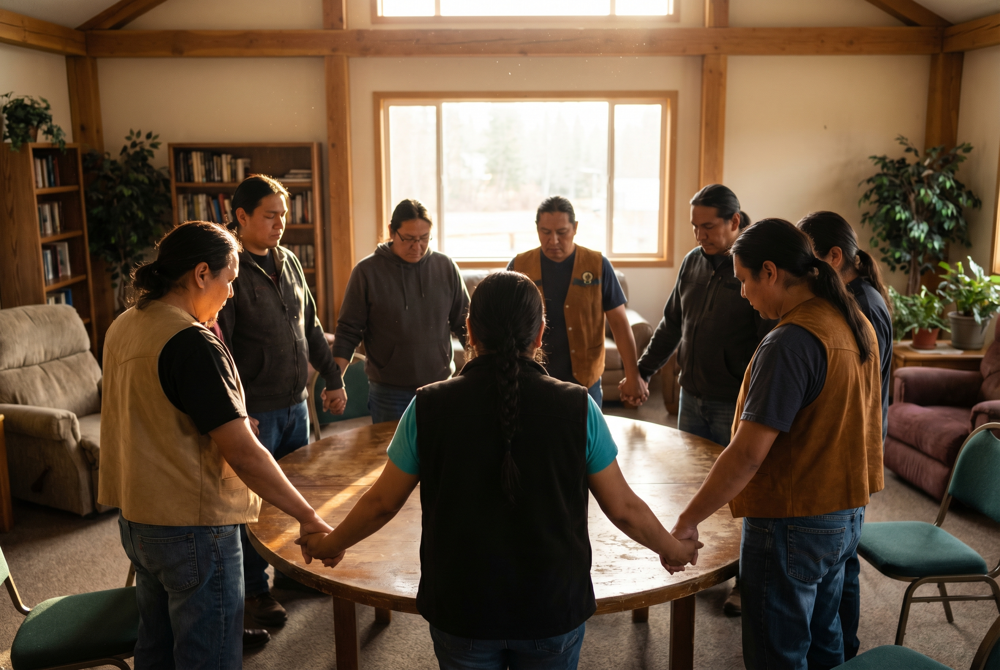

"I can do all things through him who strengthens me."
If you are like me, you can recite this verse — but in real life, find yourself far from being able "to do all things."
Why? Because we do not let Christ strengthen us? Every Biblically-aware believer knows "what God wants," and they seek to do it with His strength. Or do we know this verse so well that it has lost its impact on how we "work out our salvation"?
"Work out your own salvation with fear and trembling."
It is easy for a familiar verse to become invisible — recited without being received. Philippians 4:13 is one of those verses. We put it on T-shirts and phone cases. We quote it before big moments. But Paul wrote it from prison, not from a platform. He wasn't claiming supernatural athletic performance. He was describing something quieter and harder: the ability to be content in every circumstance, sustained not by his own resolve, but by Someone greater moving through him.
The question isn't whether we know the verse. The question is whether we are actually living in the dependency it describes.
"Years of bondage were broken and this person was set free — free indeed."
Recently, a close friend of mine discovered this truth regarding victory over alcohol, which he had struggled with for years. It was a time of deliverance preceded by many hours of fervent prayer by his family. I was fortunate to be there during his time of deliverance. I remember leaving the prayer time and thinking that something powerful had just taken place.
The day after, my friend attended church and was touched by the pastor's closing prayer. More prayers, more pastors — something big happened. Years of bondage were broken and this person was set free — free indeed. The intercessions of others had come to God's throne of grace and were answered.

Bear one another's burdens — Galatians 6:2
Sometimes, Christ's strength is not something we summon alone. It arrives through the hands and voices of the people who carry us when we cannot carry ourselves. My friend did not find freedom through willpower. He found it through a community that refused to stop praying.
"Bear one another's burdens, and so fulfill the law of Christ."
We are to carry one another's burdens. This is not a suggestion — it is the fulfillment of the law of Christ. And prayer is the primary tool for doing it. Not prayer as ritual, but prayer as warfare. Prayer as love made active.
"We destroy arguments and every lofty opinion raised against the knowledge of God, and take every thought captive to obey Christ."
Prayer is God's gift, made possible by the mediating sacrifice of Jesus. It is the tool by which our thoughts — so prone to wander, to despair, to rehearse old wounds — are brought captive to the mind of God. When we pray for someone, we are not just speaking words into the air. We are positioning ourselves, and them, before the throne of grace.
So the question comes back: I can do all things through Christ who strengthens me. Are you letting Him? And are you part of the community that strengthens others — not through advice or fixing, but through the faithful, unglamorous work of prayer?
Jesus,
Thank you for removing the barrier between us and God through Your perfect sacrifice on the cross. Thank you that your strength is not reserved for the strong — that it comes to us precisely in our weakness, through the prayers of those who love us and the Spirit who intercedes when we have no words left.
Teach us to stop performing Philippians 4:13 and to start living it — in dependence on You, and in faithful care for one another.